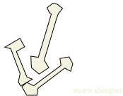

Kenzie MacDonald
Art of the Web Portfolio F24
CRUST
Section One

At the crust, or surface of the course, section one focuses on static content and getting the graps of html and css styling in the static context.
CORE
Section Three
As we reach the deepest point, these projects begin to explore scripts in programming. These include both literal scripts as well as code scripts